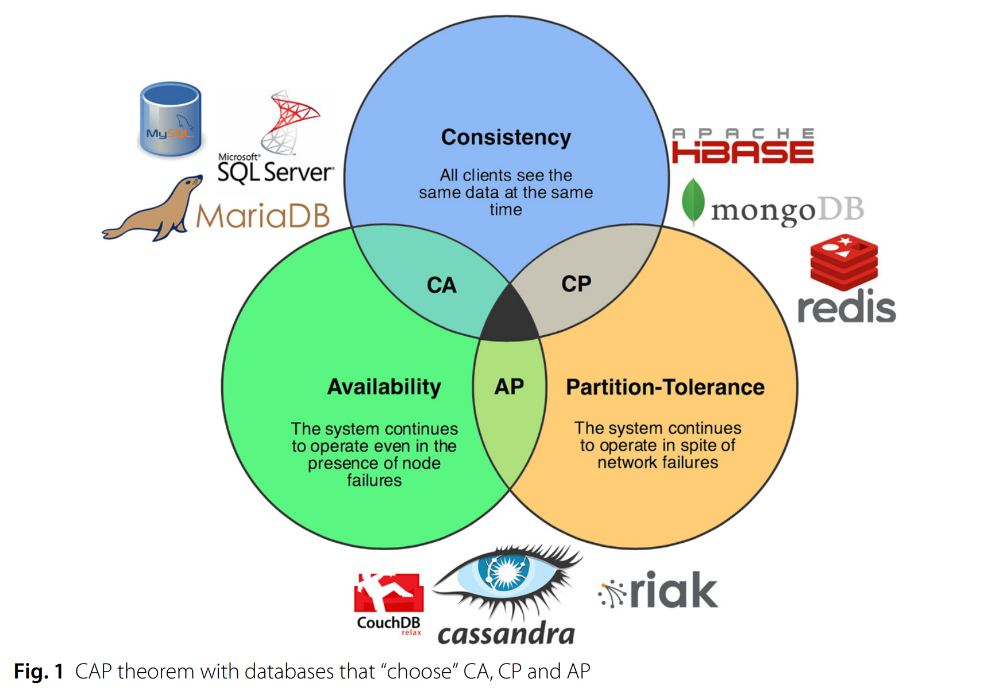

Irrupción de Amazon
| Rompiendo silos |
| Nueva aproximación al almacenamiento |
| Infrastructura dinámica |
| Infrastructura como código |
Plataformas de Infraestructura Dinámica
¿Qué es una Plataforma de Infraestructura Dinámica?
Es una combinación software y hardware aplicada a datacenters, que permite ofrecer recursos que pueden ser provisionados y gestionados de forma programática
El avance de la Infraestructura Dinámica ha permitido consolidar lo que hoy conocemos como Cloud (tras el intento del Grid Computing)
No importa la tecnología base (cloud, virtualización o bare-metal), lo importante es que existan mecanismos, herramientas y un nivel de automatización que permita su gestión dinámica. Eso sí, ciertas tecnologías ayudan a implementar estas aproximaciones.
Características del Cloud (NIST)
- On-demand self-service (provisión)
- Broad network access (disponible vía red con mecanismos estándares)
- Resource Pooling (multitenancy/multicliente)
- Rapid elasticity (añadir / quitar elementos en minutos / segundos)
- Measured service (control sobre el uso de recursos)
Características (II)
- Programable: La interacción con scripts y aplicaciones debe ser directa
- API (Application Programming Interface)
- REST API y SDK
- On-demand: La creación o destrucción debe ser inmediata y sin interacciones de terceros
- El pago por servicio debe ser por uso, pago por horas/minutos/segundos o capacidad consumida
- Self-service: Los usuarios deben ser capaces de adaptar los recursos a sus requisitos
- El departamento de Infraestructura no crea infraestructura, sino herramientas y servicios
para que cada equipo de desarrollo pueda generar, e incluso mantener, la infraestructura que necesita
- El departamento de Infraestructura no crea infraestructura, sino herramientas y servicios
para que cada equipo de desarrollo pueda generar, e incluso mantener, la infraestructura que necesita
¿Qué recursos proporcionan?
- Computación
- Storage
- Networking
Tipos de Cloud según “ownership”
- Cloud Público
- Servicio estándar para múltiples clientes
- Cada cliente paga sólo por lo que usa
- Cloud Privado
- Servicio privada para múltiples consumidores de una misma organización
- La organización paga por el total de recursos desplegados
- Cloud Híbrido
- Simplemente es que parte de la infraestructura corra en un cloud privado y otra en cloud público
- Razones como regulación/seguridad, capacidad o amortización
- Cloud de Comunidad
- Infraestructura compartida por diversas organizaciones
- Puede ser interno o externo
Ejemplos
| Tipo | Proveedores o Productos |
|---|---|
| Public IaaS cloud | AWS, Azure, Digital Ocean, GCE, Rackspace Cloud |
| Private IaaS cloud | CloudStack, OpenStack, VMware vCloud |
| Bare-metal cloud | Cobbler, FAI, Foreman |
Tipos de Cloud según modelo de servicio (NIST)
- Software as a Service (SaaS)
- Una aplicación que se comparte entre diferentes usuarios
- Ejemplos: Google Docs, Outlook365
- Platform as a Service (PaaS)
- Una plataforma ya preparada para ser usada junto a las aplicaciones
- Ejemplos: Heroku, Amazon DynamoDB, Google App Engine
- Infrastructure as a Service (IaaS)
- Infraestructura hardware compartida para crear encima infraestructura para los servicios
- Ejemplos: AWS EC2, GCE
Diferentes definiciones del Cloud

La gran pregunta: ¿público o privado?
Aspectos a tener en cuenta:
- Seguridad y protección de datos
- Requisitos legales según la localización del hosting
- Capacidad variable
- Coste total de crear tu propio Cloud vs economía de escala
- Elemento diferenciador, cercanía al negocio o commodity
- Presencia de elementos legacy o soluciones físicas específicas
Réplica de Datos: CAP theorem

NoSQL

- Document model: Los datos se guardan en documentos, tipo estructura JSON (e.g. CouchDB, MongoDB)
- Graph model: Las estructura de graphs simplifican el modelado de relaciones entre entidades (e.g. HyperGraphDB, Neo4j)
- Key-Value & Wide-Column model: Estructura básica, donde sólo se consulta via Keys (e.g. Cassandra, Redis, DynamoDB)
Continuidad de datos
La persistencia de los datos es un reto particular de la infraestructura dinámica. ¿cómo podemos afrontarlo?
- Replicar datos, simplemente asegurar que los datos de una instancia estén replicados en otra antes de destruirla
- Regenerar datos, hay datos que pueden ser generados a partir del System of record, en estos casos no es necesario proteger los datos, sino ser capaz de regenerarlos
- Delegar datos, existen servicios de storage as a service (AWS S3, etc.) o simplemente storage externo (SAN, NFS), esto permite desacoplar los problemas y focalizar en cada parte
- Back up a storage persistente, los anteriores se refieren principalmente a runtime data,
pero hay datos que deben permanecer después de la ejecución. Aunque utilicemos entornos Cloud,
no podemos esquivar nuestras responsabilidades y tener claro físicamente donde se almacenan nuestros datos.
- Truco: utilizar un proveedor diferente de infraestructura para ciertos datos es sencillo y proporciona un extra de seguridad
Gestión dinámica de la capacidad
¡Uno de los grandes beneficios del Cloud!
¿En base a qué decidimos aumentar/disminuir nuestra capacidad?
- Eventos preprogramados (pre-warming; efectos estacionales)
- Utilización de CPU
- Métricas de sistema
- Número de trabajos/mensajes pendientes


Client vs Server side Service Discovery


Service Discovery
“Distributed systems are hard”
Opciones:
- Anuncios Multicast/Broadcast
- Hardcoded IPs (individuales o rangos) + DNS lookup
- Registrarse individualmente en los servicios clientes
- Service Registry
- Los servicios se registran via REST API
- Los consumidores conusltan via REST API o DNS
- Ofrece capacidad de Health Check y Balanceo de Carga
- e.g. Consul, Eureka, ZooKeeper, etcd.
Service Discovery (ejemplo)
# Registro HTTP API
{
"name": "servicio-frontend",
"address": "10.0.0.12",
"port": 8080,
"check": {
"http": "http://10.0.0.12:8080/health",
"interval": "5s"
}
}
$ curl -X PUT -d @servicio-frontend.json localhost:8500/v1/agent/service/register
# Consulta HTTP API
$ curl -s http://192.168.99.106:8500/v1/catalog/service/servicio-frontend
[{
"Node": "f2266cec556",
"ServiceID": "servicio-frontend",
"ServiceName": "servicio-frontend",
"Address": "10.0.0.12"
"ServicePort": 8080,
}]
Desarrollo de Código y DevOps
DevOps impulsa el uso de código para configurar, desplegar, actualizar y solventar problemas que van desde la infraestructura a la Aplicación.
Por ende, una gestión eficiente y eficaz del código pasa a ser un skill fundamental de los equipos y roles DevOps
Un código no gestionable ó no fiable sólo aporta más problemas al ecosistema
No todo vale…
- “Pero si es un script”
- “Si no forma parte del código de producción”
Aprovecha todas las “best practices” que han generado años de construcción de aplicaciones
Ejemplo: Código duplicado y hardcoding
Punto de partida: Aplicación que necesita un bucket de S3 por cliente
$ ls required_s3_buckets/ my_super_customer_1.py my_super_customer_2.py my_super_customer_3.py my_super_customer_4.py my_super_customer_5.py
$ cat required_s3_buckets/my_super_customer_1.py
from troposphere import Output, Ref, Template
from troposphere.s3 import Bucket, PublicRead
t = Template()
t.add_description(
"Bucket management for my_super_customer_1")
s3bucket = t.add_resource(Bucket("S3Bucket", AccessControl=PublicRead,))
t.add_output(Output(
"BucketName",
Value=Ref(s3bucket),
Description="Name of S3 bucket for my_super_customer_1"
))
print(t.to_json())
Necesidad
Queremos que los buckets sólo retengan la información durante 30 días:
from troposphere import Output, Ref, Template
from troposphere.s3 import Bucket, PublicRead
t = Template()
t.add_description(
"Bucket management for my_super_customer_1")
s3bucket = t.add_resource(Bucket(
"S3Bucket",
AccessControl=PublicRead,
LifecycleConfiguration=LifecycleConfiguration(Rules=[
LifecycleRule(
Id="S3BucketRule1",
Status="Enabled",
ExpirationInDays=30,
)
])
))
t.add_output(Output(
"BucketName",
Value=Ref(s3bucket),
Description="Name of S3 bucket for my_super_customer_1"
))
print(t.to_json())
El problema
- ¿Hemos de modificar los 5 ficheros (que podrían ser 30)?
- ¿Y también re-ejecutar / actualizar cada uno de los 30 stacks?
Mejor aproximación
def create_bucket_for_customer(customername):
t = Template()
t.add_description(
'Bucket management for {}'.format(customername))
s3bucket = t.add_resource(Bucket(
"S3Bucket",
AccessControl=PublicRead,
LifecycleConfiguration=LifecycleConfiguration(Rules=[
LifecycleRule(
Id="S3BucketRule1",
Status="Enabled",
ExpirationInDays=30,
)
])
))
t.add_output(Output(
"BucketName",
Value=Ref(s3bucket),
Description='Name of S3 bucket for {}'.format(customername)
))
return t
El “main” queda…
customers = [
"my_super_customer_1",
"my_super_customer_2",
"my_super_customer_3",
"my_super_customer_4",
"my_super_customer_5",
]
for customer in customers:
print(create_bucket_for_customer(customer).to_json())
Aún mejor aproximación
$ cat customer_list.csv
#customer_name,retention
my_super_customer_1,30
my_super_customer_2,30
my_super_customer_3,50
my_super_customer_4,60
my_super_customer_5,30
customers = read_customer_list_from_csv(customer_list_file)
for customer in customers:
print(create_bucket_for_customer(customer).to_json())
Y aún habría mejores
- Cloudformation acepta el uso de variables
- ¿Podríamos integrar la automatización del alta de clientes en la llamada a API correspondiente?
Patrones para definir la infraestructura
Stack, la unidad básica
Stack: conjunto de elementos de infraestructura que se definen/empaquetan/gestionan como una unidad
Un stack puede ser un único servidor, toda la infraestructura relacionada con una aplicación o hasta un CPD entero
Organizando stacks
- Monolítico
- Tiers
- Stacks compartidos
- Microservicios
Monolítico
Dividir un entorno de aplicación en múltiples stacks / tiers
Compartir stacks entre aplicaciones
{ width=50% }
Microservicios
Entornos
Despliegues/“instancias” de un mismo stack(s) y servicio, para propósitos como el testing
- Por ejemplo: Desarrollo, Pre-producción y Producción
- Misma infraestructura con diferente dimensionamiento o particularidades de configuración
- También para sandboxing o “plataformas dedicadas” a propósitos/clientes
Mantener múltiples entornos de forma consistente siempre ha sido un reto…
- …pero definir la infraestructura como código nos lo facilita
NADA debe quedar fuera de la definición como código!
Reusando ficheros de definición
- Para mantener la consistencia, debemos tener un único fichero de definición de stack
- Cada entorno se personaliza con parámetros de entorno
- Ejemplo:
variable "environment" {}
resource "aws_instance" "web_server_1" {
instance_type = "t2.micro"
tags {
Enviroment = "${var.environment}"
}
Ventajas de la parametrización
- Verificar completamente la infraestructura antes de producción
- Facilita el self-service
- Evita la duplicidad de código
- Mejora la adaptabilidad del stack ante futuros cambios
Como definir infraestructura como código
Esta definición se especifica en ficheros de configuración y diferentes herramientas se encargan de provisionar, modificar o eliminar los elementos en base a esa definición
Evolución de la Infrastructura como código
The AWS journey
API calls
import boto3
s3 = boto3.client('s3')
bucket_name = 'my-bucket'
s3.create_bucket(bucket_name)
filename = 'file.txt'
s3.upload_file(filename, bucket_name, filename)
Cloudformation
{
"AWSTemplateFormatVersion": "2010-09-09",
"Resources": {
"S3Bucket": {
"Type": "AWS::S3::Bucket"
},
},
"Outputs": {
"S3BucketSecureURL": {
"Value": {
"Fn::Join": [
"",
[
"https://",
{
"Fn::GetAtt": [
"S3Bucket",
"DomainName"
]
}
]
]
},
"Description": "Name of S3 bucket"
}
}
}
Troposphere
from troposphere
import Output, Ref, Template
from troposphere.s3
import Bucket, PublicRead
t = Template()
t.add_description(
"AWS CloudFormation Sample Template”
s3bucket = t.add_resource(Bucket("S3Bucket", AccessControl = PublicRead, ))
t.add_output(Output(
"BucketName",
Value = Ref(s3bucket),
Description = "Name of S3 bucket to hold website content"
))
print(t.to_json())
Sceptre
$ sceptre create dev/vpc.yaml
dev/vpc - Creating stack dev/vpc
VirtualPrivateCloud AWS::EC2::VPC CREATE_IN_PROGRESS
dev/vpc VirtualPrivateCloud AWS::EC2::VPC CREATE_COMPLETE
dev/vpc sceptre-demo-dev-vpc AWS::CloudFormation::Stack CREATE_COMPLETE
AWS CDK
Amazon Cloud Development Kit
from aws_cdk import (
aws_s3 as s3,
cdk
)
bucket = s3.Bucket(self,
"MyFirstBucket",
versioned=True,
encryption=s3.BucketEncryption.KmsManaged,)
troposphere, but multilanguage?
Summarizing (some) AWS IaC options
| Tool | Declarative? | Deployment/Update tool? | Config-driven | Programmatic | Language |
|---|---|---|---|---|---|
| AWS API | N | N | N | Y | N/A |
| Cloudformation | Y | More or less | Y | N | JSON/YAML |
| Troposphere | Y | N | N | Y | Python |
| Sceptre | N/A | Y | N/A | N/A | N/A |
| CDK | Y | Y | N | Y | * |
Multicloud
Terraform(-v11)
provider "aws" {
region = "us-west-2"
}
resource "aws_s3_bucket" "example" {
bucket = "my-test-s3-terraform-bucket"
acl = "private"
versioning {
enabled = true
}
tags {
Name = "my-test-s3-terraform-bucket"
}
}
Terrascript (+Terraform-v12)
from terrascript import Terrascript, provider
from terrascript.aws.r import aws_instance
ts = Terrascript()
# Add a provider (+= syntax)
ts += provider('aws', access_key='ACCESS_KEY_HERE',
secret_key='SECRET_KEY_HERE', region='us-east-1')
# Add an AWS EC2 instance (add() syntax).
inst = ts.add(aws_instance('example', ami='ami-2757f631', instance_type='t2.micro'))
# Print the JSON-style configuration to stdout.
print(ts.dump())
Pulumi
package main
import (
"github.com/pulumi/pulumi-gcp/sdk/go/gcp/storage"
"github.com/pulumi/pulumi/sdk/go/pulumi"
)
func main() {
pulumi.Run(func(ctx *pulumi.Context) error {
// NewBucket already adds a random suffix
bucket, err := storage.NewBucket(ctx, "pulumi-bucket", &storage.BucketArgs{
Location: "EU",
})
if err != nil {
return err
}
ctx.Export("bucketName", bucket.ID())
ctx.Export("websiteUrl", bucket.Url())
return nil
})
}
Multicloud IaC options summary
| Tool | Declarative? | Deployment/Update tool? | Config-driven | Programmatic | Language |
|---|---|---|---|---|---|
| Terraform | Y | Y | Y | N | HCL, JSON(v12) |
| Terrascript | Y | N | N | Y | Python |
| Pulumi | Y | Y | N | Y | * |